A bar that is too long for its plot can fold back on itself, as in W. E. B.
Du Bois's 1900 plates, or leave the plot and run around the page. These are
two different pictures. In the first, each bar turns about its own row and
the row grows, so it is a layout question. In the second, the whole value
axis follows one path, so it is a coordinate transform.
Recommendation. Add nothing that is only for folded bars.
The Du Bois fold is the wrap option already proposed for
stack (#122), with one new rule. The around-the-page bar and Du
Bois's spirals are a plain bar chart under Coord.along(path),
already proposed for the spiral periodic tables (#1347). No
Coord.fold.
All pictures are prototypes rendered by story-level helpers, and neither
wrap nor Coord.along exists on main.
Terms
Fold
A bar runs to a limit, turns 180 degrees, and continues the other
way beside itself. Karduni et al. call the chart a "Du Bois wrapped
bar chart".
Lane
One straight run of a folded bar. Two turns make three lanes.
Turn
The half ring that joins two lanes.
Wrap
A layout breaks one long row into several rows that fit the room, as
text wraps into lines.
Path coordinate
x runs along a given path by arc length, and y is the distance to
the side of it. This is Coord.along(path) from #1347.
The rules
stack({ dir, wrap: { at } }) folds the stack's axis
every at data units. The first lane is the ordinary
bar, so the axis runs from 0 to at and every lane reads
on it.
A wrapped stack is still one space. The fold falls
wherever the axis reaches at, also inside a part, and
turns join the lanes. A wrapped spread keeps its
children whole and its rows separate.
A row with a folded stack is as tall as its lanes, so its neighbors
move down, as a paragraph grows when its text wraps.
Turns are drawn and do not count toward length. The value is the sum
of the lanes.
A bar that follows one path around the page, or a spiral, is not a
wrap. It is a bar chart with coord: Coord.along(path).
1Occupations (Du Bois): one bar folds once
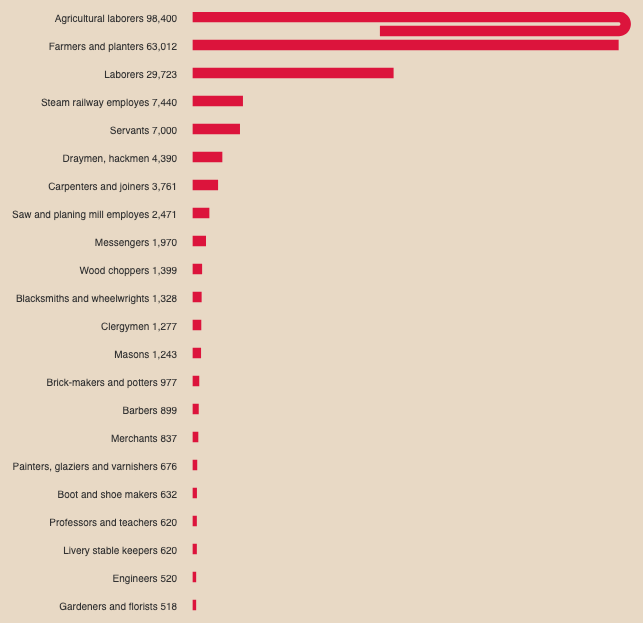
Prototype.
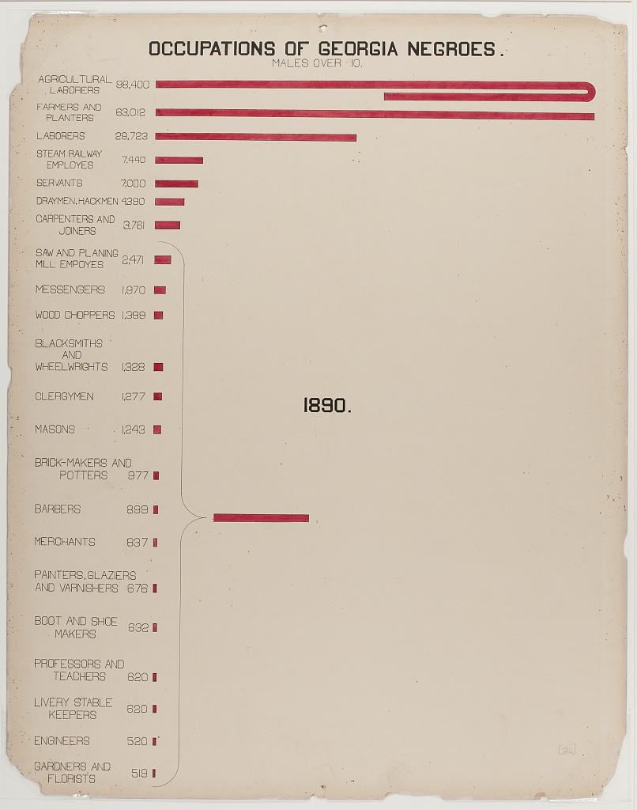
Reference. Du Bois, "Occupations of Georgia Negroes", 1900.
Library of Congress, item 2013650447.
JavaScript
{{code:ex1}}
Python
{{code:ex1-py}}
Today's code (public API only)
Every bar becomes a table of path vertices, drawn as a thick
line. Turns are square because line has no
join option.
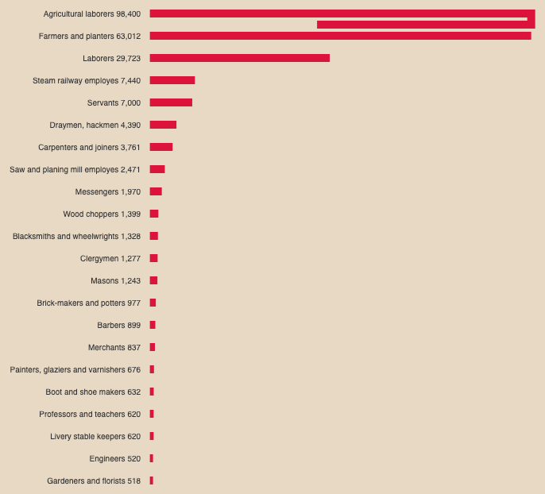
{{code:today1}}
2Courses of study (Du Bois): three lanes
Prototype. Industrial's lanes are 900, 900 and 452.
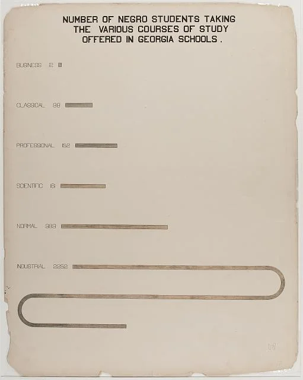
Reference. Du Bois, courses of study in Georgia schools,
1900. Library of Congress, item 2013650436.
{{code:ex2}}
spacing is the gap between lanes, the same word
spread uses for the gap between children.
Fork: are a wrapped stack's lanes joined?
Joined. One bar with turns.
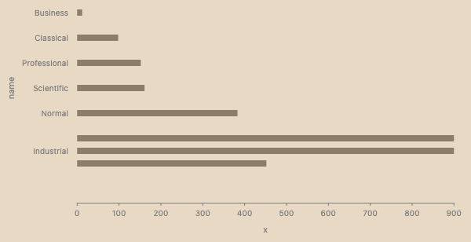
Separate. Every lane starts at the left.
Separate lanes read as three bars, not one. If that picture is wanted,
it is a spread of pieces, which is how it was drawn here.
Chosen: joined, with no option, by rule 2.
Fork: does a turn count toward length?
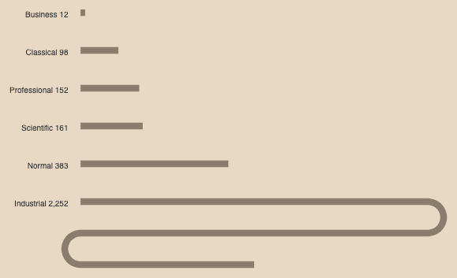
Turns free. Lanes 900, 900 and 452.
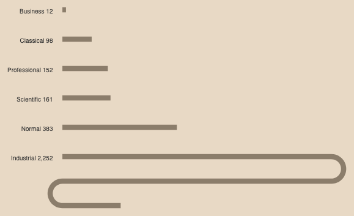
Turns count. Lanes 900, 900 and about 196.
With free turns, every lane reads on the axis and the lanes add up to
the value. Du Bois's own plates are not exact enough to tell which he
meant.
Chosen: turns do not count (rule 4, as in Karduni et al.).
Today's code (public API only)
The same foldTable as in example 1.
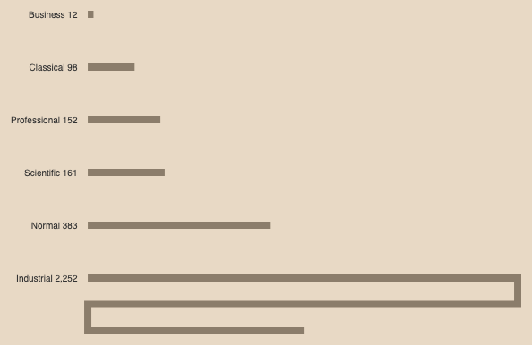
{{code:today2}}
3Two bars fold in neighboring rows
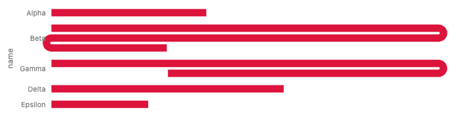
Prototype. Beta is 230 and Gamma 170, with lanes of 100.
{{code:ex3}}
Fork: wrap or coordinate transform?
Wrap. Rows make room.
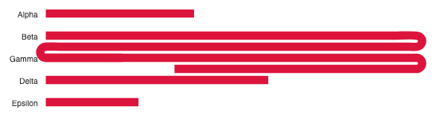
One coordinate transform. Beta's lanes cover Gamma.
A coordinate transform bends the picture after layout, so it cannot
ask a row for room. With one folding bar the two draw the same picture
(example 1), and the coordinate version is one option on
chart.
Chosen: wrap, because the form in the literature (example 5) has many
bars folding.
4A stacked bar folds
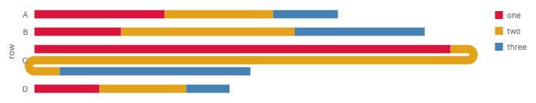
Prototype. Row C is 250 with lanes of 100. Its second part runs from
96 to 206, through the first turn.
{{code:ex4}}
The fold is on the stack, so a part can straddle a turn. Part boundaries
are cut square to the bar.
5The wrapped bar chart of Karduni et al.
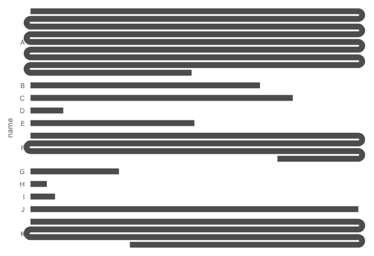
Prototype, drawn sideways. Lanes of 1000. A (8,500) has nine lanes,
F (3,250) and K (3,700) have four.
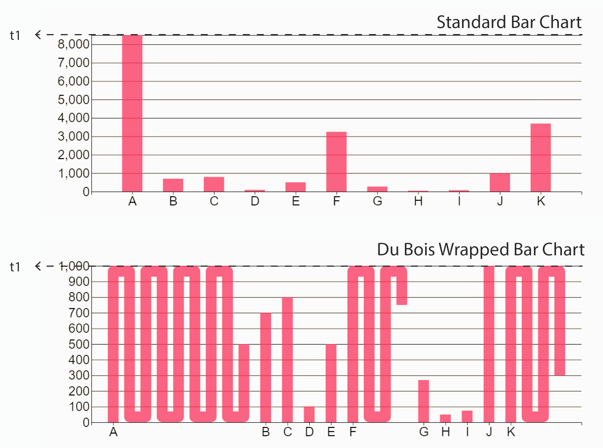
Reference. Karduni, Wesslen, Cho and Dou, CHI 2020, figure 3.
The bars are vertical there.
{{code:ex5}}
6Air conditioners: the bar runs around the page
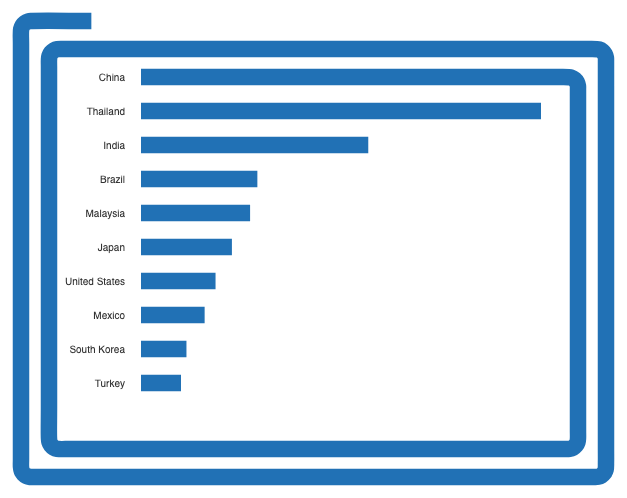
Prototype.
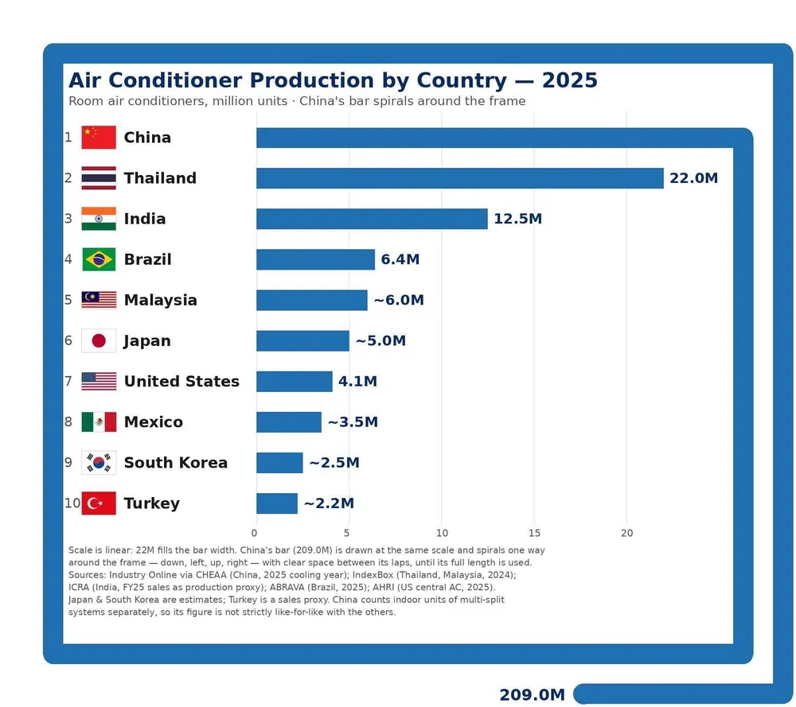
Reference. Air conditioner production, 2025. Source not
found.
{{code:ex6}}
aroundTheFrame is a list of points: the top row's baseline,
then a rounded rectangle that spirals outward. at: 22 says
that 22 data units reach the end of the path's first straight run, so
the other bars are an ordinary bar chart. The option name is a
placeholder. A path that names the chart's own frame is the missing
piece, and it belongs in #1347.
Today's code (public API only)
China's bar is a list of corners in data units. A step in y counts
as some number of x units, which is guessed from the chart's size.
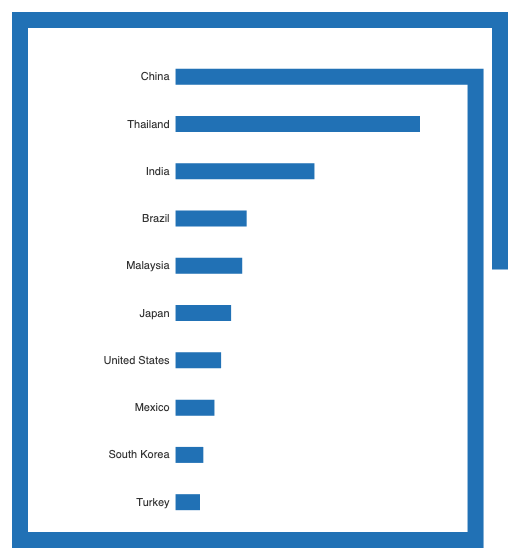
{{code:today6}}
7Furniture (Du Bois): bars wound into a spiral
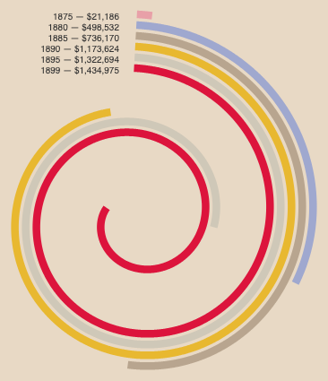
Prototype. Each year is a lane beside one inward spiral.
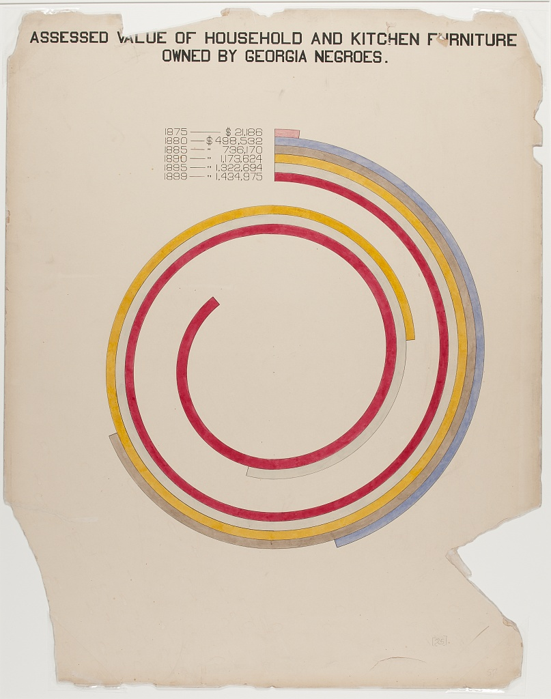
Reference. Du Bois, assessed value of household and kitchen
furniture, 1900. Library of Congress, item 2013650445.
{{code:ex7}}
Coord.spiral from #1347 should say the same without a
hand-made path. That was not checked here.
Not rendered: Du Bois's "City and rural population" plate (Precedent
tab), one path with a sharp corner at each category and a spiral at the
end. Here it would be a stack({ by: "category" }) under
Coord.along of that zigzag path.
Systems
System
What the user writes
What the system decides
Names
Karduni et al., CHI 2020
A threshold t1 on the value axis
Lanes, turns, and that a wrapped bar takes several category slots
wrap, number of wraps
ggdubois (R, unfinished)
geom_wrappedbar(max_height)
Default threshold 1.1 times the second largest value
Hand-placed lines and arcs, or a hand-computed path stroked thick
Nothing
ggbreak scale_wrap(n)
A row count
Cuts the whole axis into n stacked panels
wrap
Horizon charts (Heer et al., CHI 2009)
bands, mode: offset or mirror
Folds the value axis into bands that overlap, with the band shown
by color
band, step
CSS flex and fragmentation
flex-wrap: wrap, box-decoration-break:
slice or clone
Line breaks, and whether each fragment gets its own caps
fragment, wrap
Office SmartArt snake layout
contDir: sameDir or revDir, bkpt,
sp
Rows that alternate direction
snake
D3 spiral histogram (condegram)
A scale whose range is the path's length,
getPointAtLength
Nothing
along the path
Illustrator art brush
A straight artwork and a path
Stretches the artwork along the path
brush
No grammar has a fold. Every recreation computes the path by hand. The
other answers to "one value is far too big" are a log scale, an axis break
(ggbreak, matplotlib brokenaxes), a clipped bar with a label,
and two charts.
Karduni et al. found the fold more accurate than a plain bar chart for
reading small values and ratios, slower by a few seconds, and tiring past
a few wraps. They did not compare against log scales or axis breaks.
Reference images
Du Bois, "Occupations of Georgia Negroes". One bar folds once.
Library of Congress, item 2013650447.
Du Bois, courses of study. One bar folds twice. Library of
Congress, item 2013650436.
Du Bois, household and kitchen furniture. Bars wound into a
spiral. Library of Congress, item 2013650445.
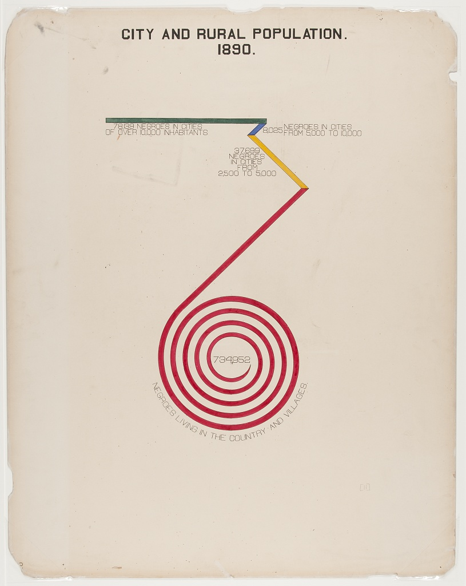
Du Bois, "City and rural population". One path with a corner at
each category and a spiral at the end. Library of Congress.
Karduni, Wesslen, Cho and Dou, CHI 2020, figure 3. A standard
bar chart and the wrapped bar chart of the same data, wrapped at
t1.
A. The fold is a coordinate transform (Coord.fold({ at, pitch }))
One option on the chart, and the best-reading spec for the three
reference images. It fails when two rows fold (example 3), and it cannot
make room: a coordinate transform starts its own space, so it cannot
share a value axis with bars outside it, and it has no axes or labels
inside. One coordinate per row fixes the room but needs a mark function
and a hand-passed bar length for each row.
Overlap: Coord.fold would be Coord.along of a
zigzag path, an exact composition, and a large partial overlap with
wrap. That is why it is not proposed.
B. The fold is a wrap on stackRecommended
Rows grow, the value axis is shared, and stacked bars work. It needs the
wrap option, which is proposed (#122, #486) and not built,
plus the new cut-and-join rule for stacks.
Overlap: a wrapped stack of one bar under one fold equals approach A's
picture, a small degenerate case. A wrapped spread of unit
squares is a waffle chart, the same option on the sibling operator.
C. Today's API
Works now for every picture, as hand-built geometry. The user computes
vertices, guesses the aspect ratio for vertical runs, and gets square
corners. A join option on line would round the
corners and is worth adding on its own.
What would change the pick
If only one bar ever folds in the charts we care about,
Coord.along with a zigzag path draws the Du Bois plates
without wrap. It is the smaller step, since #1347 needs
Coord.along anyway.
What the prototypes found
A bar in a bent space is drawn as its midline stroked at the bar's
thickness (rect.tsx), so a turn is a true half ring. This
only holds when h is a literal number.
A coordinate transform is one continuous map, so it cannot draw a turn
that takes no length. The prototype gives each free turn half a pixel,
which shortens the later lanes by half a pixel per turn. A layout
wrap draws lanes and turns as pieces and has no such
sliver.
A fitted coordinate transform rejects ordinal content, culls marks that
start outside its window, and draws labels unbent (#952) or drops them.
The prototypes draw labels as a second chart beside the bars.
There is no way to set an axis domain, so a bar cannot be longer than
its plot today.
line has no join or cap option, and its x,
y form sorts by x, so a U-turn needs the
scatter and .layer(line()) form.
The choice proposal's wrap moves every mark to the next row
whole. Rule 2 changes that for stack only.
Related issues
#122A wrap operator for facets, waffles and text. This proposal uses its
wrap option.
#486The choice operator, whose proposal moved wrap onto
stack and spread.
#1347Spiral and snail periodic tables. Proposed
Coord.along and Coord.spiral.
#1284Bend and envelope coordinates, where the path coordinate
started.
#1078Du Bois data portraits. Lists the furniture and city and rural
spirals as targets.
#952Text and labels ignore the coordinate transform.
#1158Bring back the arc-length polar coordinate, removed for drawing NaN
paths.
#1101One model for custom strategies, needed before a user-defined path
family.
Smaller choices
at is in data units, after Karduni's "where on the axis to
wrap". No default: ggdubois's 1.1 times the second largest value is a
heuristic a user would have to model.
A wrapped stack always alternates direction. Same-direction lanes are a
spread of pieces.
Karduni's second threshold (shorter return lanes) is left out.
Horizon charts fold the same axis by overlap. They are not part of this
proposal.
Python: stack(dir="x", wrap={"at": 63012}), the same shape
as axes={"x": {...}}.